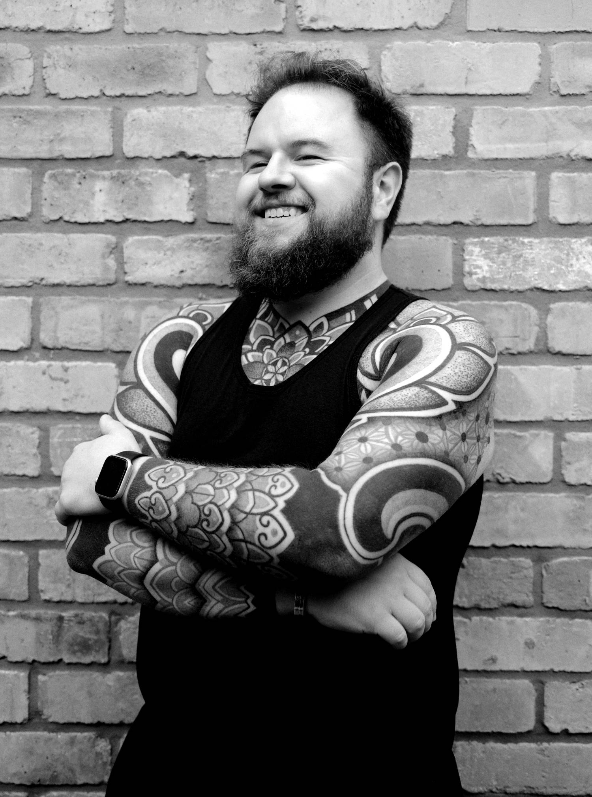

Director & CGI Artist · Birmingham, UK
I direct, build, animate and edit cinematic worlds.
I'm Rok Pat, a director and CGI artist working with musicians, dancers and brands around the world. I take a project from the first idea to the final frame: concept, storyboard, set and 3D build, animation, edit and delivery.
My background is in arts and architecture, which is why I think about space, light and composition before anything else.
Every project is a conversation, so you're involved at the stages that matter.
Working remotely
Most of my projects run remotely. We agree the plan and review stages together at the start, I share work through a private review link, and you give feedback along the way. For filmed work, I'm happy to travel.
How I work
-
Concept
We talk through your idea, references and goals.
-
Storyboard
We map out the story before anything is built.
-
Build or shoot
I build sets in 3D or in real life and shoot the footage.
-
Bring it to life
I add animation, VFX, camera and lighting.
-
Edit and deliver
I make the final edit in the formats you need.